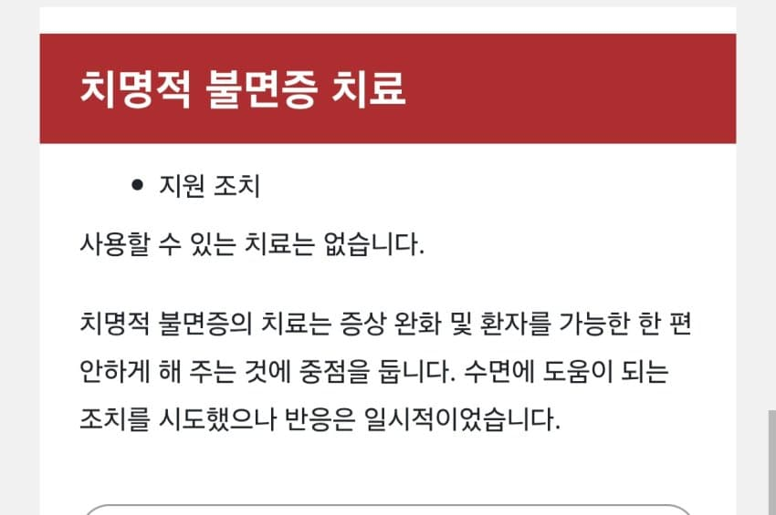

1. 루게릭 병
정확한 의학적 명칭은 근위축성측상경화증(als)라고 한다
이 병은 걸리면 탈모처럼 진행을 늦추기만 할 뿐 멈추게 하는 방법은 없는 무시무시한 병이다
증상은 몸이 점점 굳어지며 나중엔 걸을수도, 숨 쉬는것조차 마음대로 할 수 없게된다
베이브루스와 함께 메이저리그 뉴욕 양키스 역대 최고의 타자 중 한명이었던 루 게릭이 이 병에 걸린것으로 유명해 루 게릭병으로 잘 알려진 병이다
걸리면 평균적으로 3~5년 이내 죽지만 스티븐 호킹처럼 70살까지 사는 경우도 드물지만 있음
이 병의 가장 무서운 점은 발병 원인을 아무도 정확히 모른다는 것 심지어 MRI와 CT 등으로도 이 병에 걸린지 알 수가 없다
2. 크로이츠펠트 야콥병(CJD)
인간 광우병으로 유명한 그 병이다
증상은 급속히 진행되는 치매와 비슷하며 지적능력 감소 , 기억력 감퇴 등을 보이다가 나중엔 생존 유지를 위한 기능마저 상실하며 수 개월 이내에 대부분 사망한다
다만 한 가지 알아야 할 점은 인간이 광우병 의심인자 소고기를 먹으면 변형 CJD에 걸릴 수 있는데,
실제로는 이 변형CJD가 아니라 원인불명의 일반적인 CJD로 사망하는것이 8~90프로로 대부분이며,
나머지 약 10프로도 유전적인 이유 때문이지 광우병걸린 소 먹고 변종 CJD걸려서 죽은 인간은 이중에서도 극히 드물다
현재 대한민국에서 소고기 먹고 변형 CJD 걸려서 사망한 사례는 단 한건도 없었다
이 병의 무서움은 병 발생 방식인데
뇌 속의 정상 프리온 단백질이 갑자기 비정상적으로 변형되며 돌연변이 프리온 단백질로 변함
근데 이 돌연변이에겐 좀비마냥 감염 능력이 있는데 어찌나 강력한지 주변에 있는 대부분의 정상 프리온 단백질들을 좀비 단백질로 모조리 변형시킨다
이 좀비 단백질들은 분해가 잘 안되기때문에 결국 수없이 감염되고 증식된 좀비 단백질들로 하여금 스펀지처럼 뇌에 구멍을 뚫게 됨
당연히 완치법이 없다, 애초에 정상 프리온 단백질이 왜, 무엇때문에 최초로 변형되는지조차 정확히 모름
정말 무서운 병이 아닐수가 없다
3. 치명적 불면증
엥? 불면증 따위가 할 수도 있는데, 단순 심리,정신,신체적 질환이 원인인 일반 불면증과 달리,
이 병도 위에 나온 뇌의 프리온의 변이에 의한 병이기 때문에 걸리면 좆된다, 단지 인간의 수면 부분을 건드리는 병이라 잠에 들지 못해 불면증이라고 불릴 뿐

사용할 수 있는 치료는 당연히 없으며,
발병 후 평균 2년 이내에 사망한다
처음엔 극심한 환각, 정신이랑, 약한 불면증 등의 증상이 나타나며, 시간이 경과할수록 잠을 전혀 자지 못하는 상태가 되며,(수면제 처방 등도 잠을 자는 데 전혀 도움이 되지 않음, 인간을 잠에 들 수 있게 해주는 스위치 자체가 망가지기 때문)
나중엔 인지 기능을 모두 상실하며 결국 혼수상태가 되어 사망하게 된다
이 병이 진짜 무서운 건 치명적 가족성 불면증의 경우, 유전성이 있다는 것이다.
2014년에 처음으로 우리나라에서 이 유전병의 발병사례가 보고되었다고 함
4.췌장암
발병 원인은 명확하지 않으며, 위에 언급된 병들과 달리 초기에 발견되면 치료가 쉽다
그러나 증상이 없는 경우가 많아 초기에 발견되기 매우 어려우며 CT 등을 찍어야 하는데 방사능 피폭 문제로 자주 검사받을 수는 없기 때문에,
말기나 전이 후 발견되는 경우가 많다
축구선수 유상철이 췌장암으로 사망한것으로 유명하다
유상철도 발견 당시 췌장암 4기, 전이판정을 받았다
다른 암도 말기까지 가면 그렇겟지만 췌장암도 4기 후 5년이상 생존율이 2프로밖에 안되는 질병이다
게다가 췌장암은 위에 언급한 CJD나 루게릭 병 등 희귀한 병이 아니라 상재적으로 발병률이 흔한 질병이라 더 무섭다
5.당뇨병
위의 병들처럼 단기간 죽음으로 몰고가는 질병은 아니지만 좆같은 병임엔 확실하다
일단 인간의 먹고싶은 욕구인 식욕을 상당히 제한한다는 점에서 그렇다
1형 당뇨와 2형 당뇨로 구분되어지는데, 면역체계에 이상이 생긴 1형 당뇨보단 유전적, 생활습관이 원인인 2형 당뇨가 훨씬 많다
당뇨가 ㅈ같은 점은, 식단 관리 또는 인슐린 주사 등 적절한 조치가 이루어지지 않으면 여러가지 합병증이 와 고통에 시달리게 되는데,
이경우 신장, 혈관, 면역, 신경, 등 전신에 주는 모든 상태이상 디버프가 상시로 걸리게 된다
당뇨가 심한 사람의 경우 여러 합병증 등으로 독감 한방에 골로 가기도 한다..
당연히 완치법은 없다, 평생 혈당 수치 재고 약먹고 관리하는방법말곤 없음..
댓글
댓글 보관 대기 중입니다. 원문 응답 오류가 있으면 다음 실행에서 다시 수집합니다.